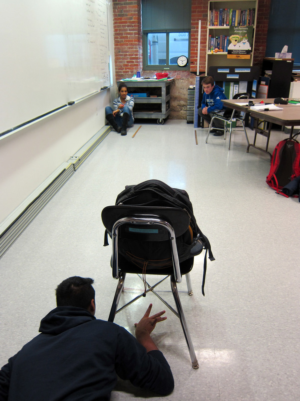

This class is taught by Mr. Ellis. This is generally considered the most regular high school class at MAMS. The class has two routes, Algebra and Calculus. It follows the general AP curriculum for the AP Physics 1 and C/CEM (for those who follow the calculus route) exams. Mr. Ellis also prepares you for the Physics Subject Test. To cover all the material for those exams at the end of the year, the class is generally fast-paced. Our homework is generally to write down notes for the next day, so we can “sleep on it,” as well as EOC or end-of-chapter questions done when the name suggests. Each class starts off with a review of the agenda and the discussion of the class notes from the previous night. If there is any time left, we generally do practice problems together with our tablemates. This class is one of the few where there are tests and quizzes, in addition to labs.
Uber problems are long, multi-step problems that have a creative background for the topics we are covering in for the unit. We are generally given them towards the end of a chapter, so that we can understand all the various concepts that are involved with the problem. One interesting twist with these problems is that although we all have the same concepts and overall structured problem, we are given different values for variables, so we cannot simply do the problem with someone else. The A Term Uber problem involved concepts such as projectile motion. To see my Uber writeup, please click the heading above.
Labs are group assignments, where we are tasked to design an apparatus and conduct the scientific method upon our apparatus. One particular lab is the Spring Energy Lab, where groups are tasked with designing apparatus and testing hypotheses upon them. My groups’ apparatus was essentially a matchbox launched as a projectile from the base of a chair. Our hypothesis was as follows; that as the mass of the projectile increases, the distance it travels along a level surface will decrease, or mass inversely proportional to distance traveled. To view my poster file for this lab, please click the heading above.
